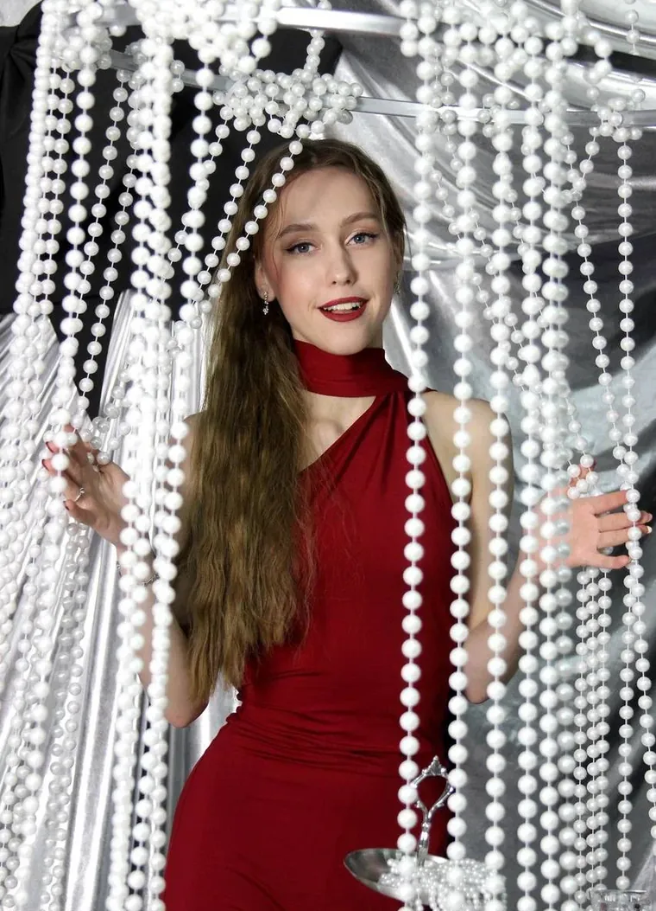
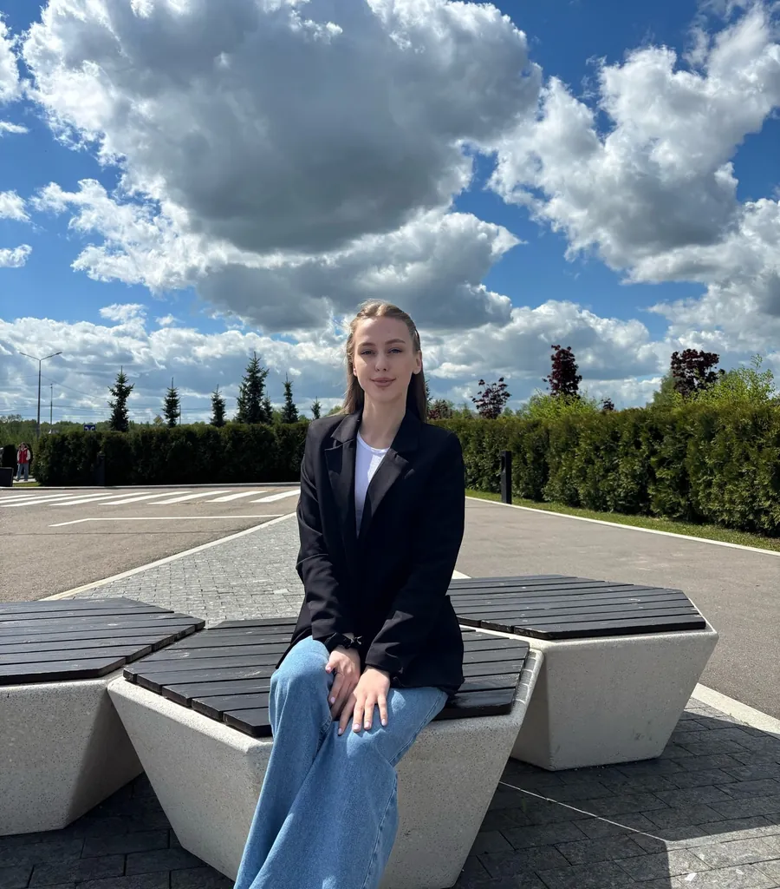
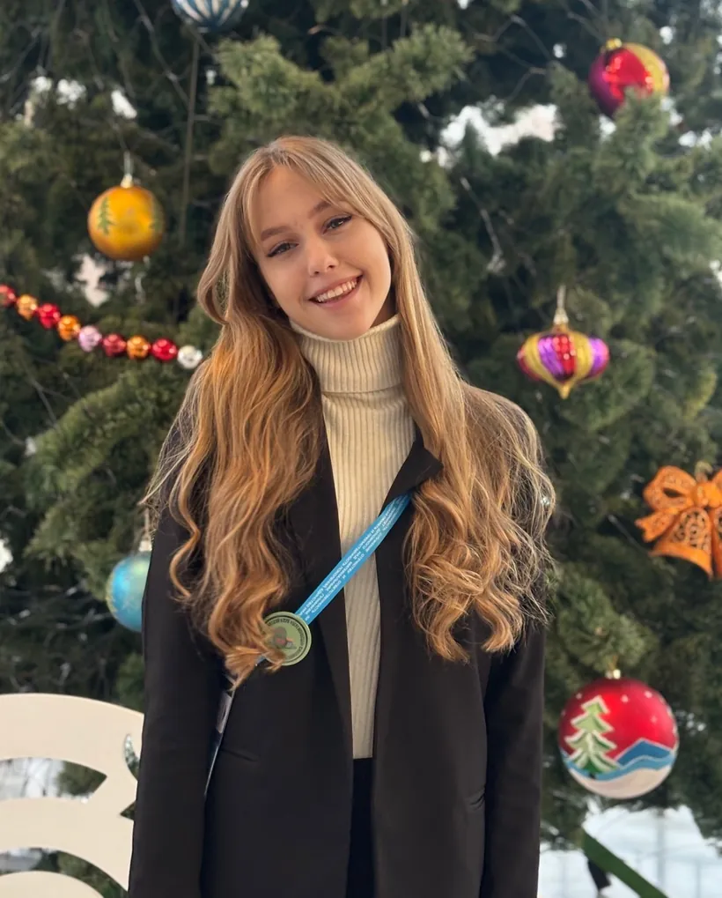

01↗
Финансовый анализ
Работа с бухгалтерской отчётностью, расчёт финансовых коэффициентов, оценка платёжеспособности и риска банкротства.
Стажёр финансово-экономического направления. Финансовый анализ, управление рисками и экономическая безопасность.

Совмещаю очное обучение, работу менеджером ресторана и финансовое просвещение.

✦ Выпускной курс · 2027Студентка выпускного курса Финансового университета. Совмещаю очное обучение с работой менеджером ресторана и участием в финансовом просвещении. Имею опыт преподавания финансовой грамотности школьникам и выступления на научной конференции.
Хочу применять профильные знания в реальных задачах организации и последовательно развиваться в выбранной команде. Готова осваивать новые инструменты, разбираться в сложных задачах и учиться у опытных коллег. Открыта к обратной связи.
Преддипломная практика или стажировка с возможностью дальнейшего трудоустройства. Рассматриваю банки, коммерческие компании и государственные организации. Готова начать до официального периода практики; дату выхода и учебные обязательства согласую заранее.
Курский кампус · бакалавриат, очная форма · 38.03.01 «Экономика» · 4-й курс
Профессиональные знания и учебная практика. Наведите на карточку.
Работа с бухгалтерской отчётностью, расчёт финансовых коэффициентов, оценка платёжеспособности и риска банкротства.
Учебные задания по оценке кредитных рисков, составлению карт рисков и проверке внутренних контролей.
Учебные задания по проверке контрагентов и разбору подозрительных операций.
Подготовка расчётов, отчётов, аналитических записок и презентаций в рамках обучения.
Работа совмещается с очным обучением в университете.
Формулы ЕСЛИ, СУММЕСЛИ, ВПР/XLOOKUP; сводные таблицы; графики; обработка таблиц и Power Query.
Ежедневно в рабочих задачах менеджера ресторана.
Работа с нормативной базой.
Опыт использования.
Чтение финансовых текстов и письменная коммуникация в пределах уровня.
Олимпиады, конференции и научная работа.
«Регулирование деятельности цифровых платформ: поиск баланса между инновациями и защитой прав потребителей»
II Международная научно-практическая конференция «Проблемы и приоритеты развития современной экономики», Курский филиал Финансового университета. Очное участие.

Секция «Социально-экономическое развитие России: прошлое, настоящее и будущее».
«Место экономического анализа в современной системе эффективного управления бизнесом»
Дипломы, сертификаты и благодарности могу предоставить по запросу.
Член центра финансового просвещения Курского филиала Финансового университета.
Благодарность · 2025Коммуникативные бои в рамках Всероссийского чемпионата по финансовой грамотности и предпринимательству.
Благодарности Минобрнауки КО · 2025, 2026Слёт волонтёров финансового просвещения, Рязань.
Благодарность РИРО · 2025Благодарственное письмо Комитета молодёжной политики Курской области.
2026